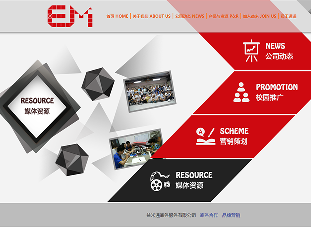
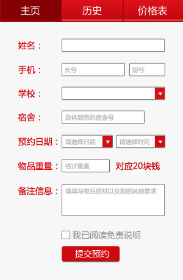
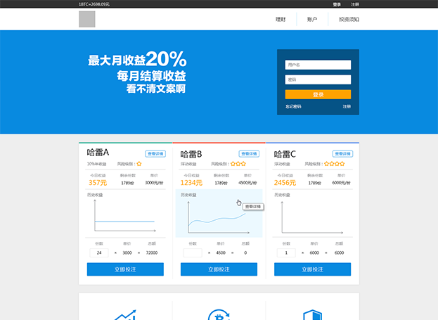
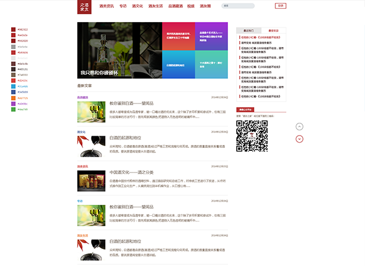
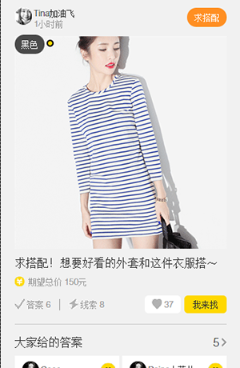
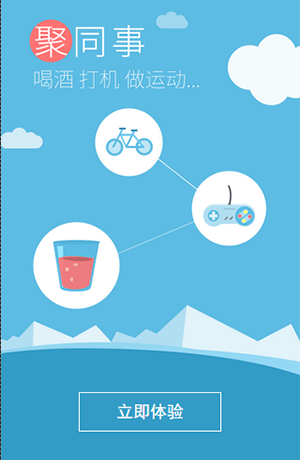
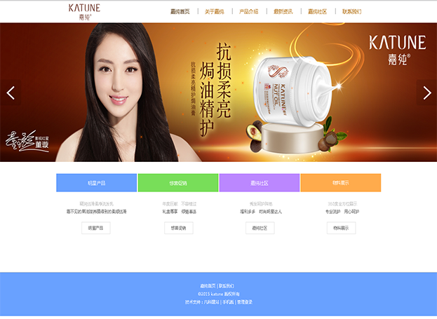

- 章书彬
- 联系方式：13580562192
- QQ：1910919177
- 邮箱：1910919177@qq.com
- 就读大学：广东外语外贸大学
- 就读专业：计算机科学与技术
- 面试职位：web前端工程师
个人简介
- 性格：好相处+逗比性格。
- 兴趣爱好：玩设计，玩前端，工作之余喜欢打网球，游泳。
- 优点：自学能力（自学：html5，css3，js，jq，less等），每次都会记下笔记以消化巩固知识。
- 不足：有时为自己安排过多的工作，导致压力过大重新计划。
- 获奖情况：在年级成绩处于上层，获得校级综合二等奖学金。
- 总体评价：是个爱玩爱疯爱学习的程序猿。喜欢探讨人生，做生活的有心人。
技能介绍
- HTML595%
- CSS395%
- JS85%
- JQUERY85%
- PHOTOSHOP85%
- PHP60%
实习经历
实习公司：广东益米科技有限公司
益米科技是一家专门针对为大学生更多服务的学生创业公司。在司期间前期负责设计和前端。参与微信公众号的制作（公众号：益米通生活平台）。个人完成设计与重构的团队官网。收获：第一视角接触客户，倾听意见，设身处地提升交互，且公司最重要是培养合作精神。
实习公司：网易
网易销售部前端职位。学习网站模板的架构以及原理，了解代码，负责网易新闻发布器模板以及楼盘前端模板的使用以及修改，解决客户所遇到的问题，更改代码模板的内容。闲时也进行一些php脚本抓取数据的编写。收获：工作闲时自学了html5，css3。体验了工作的状态，开始步入了社会。
项目经历

项目：广东益米科技有限公司（设计+前端）
自己完成的设计和前端的益米通公司的官网，已经上线，后来已经改版。

项目：益米科技微信公众号（设计+前端）
实习公司的第一次移动端项目，设计稿经多次修改，效果一般。（公众号：益米通生活平台）

项目：哈雷中国（重构）
较为成熟的一次重构项目，开始注重重构的重用性以及可扩展性，效果还不错。网址：www.halleychina.com。

项目：酒友之家（前端）
此项目为第一次直接与客户面对面商谈需求，途中经历了不少困难，而且时间非常赶，也意识到了小团队的内部沟通的重要性，感觉还不错。网址：www.9univ.com。

项目：See（美力圈界面的重构）
美力圈是本人做的一次相对比较成熟手机页面，由于设计师有强迫症，第一次感受到前端精确到1px的感觉，不过之后会以这个为目标继续加油。

项目：易聚（前端）
这算是比较成熟的手机项目了，负责前端部分做的也还挺满意。

项目：嘉纯（设计）
应客户需求使用网上的凡科使用模板制作网页，感觉只需要慢慢摸索便可以轻易上手。网址：http://www.katune.org/。